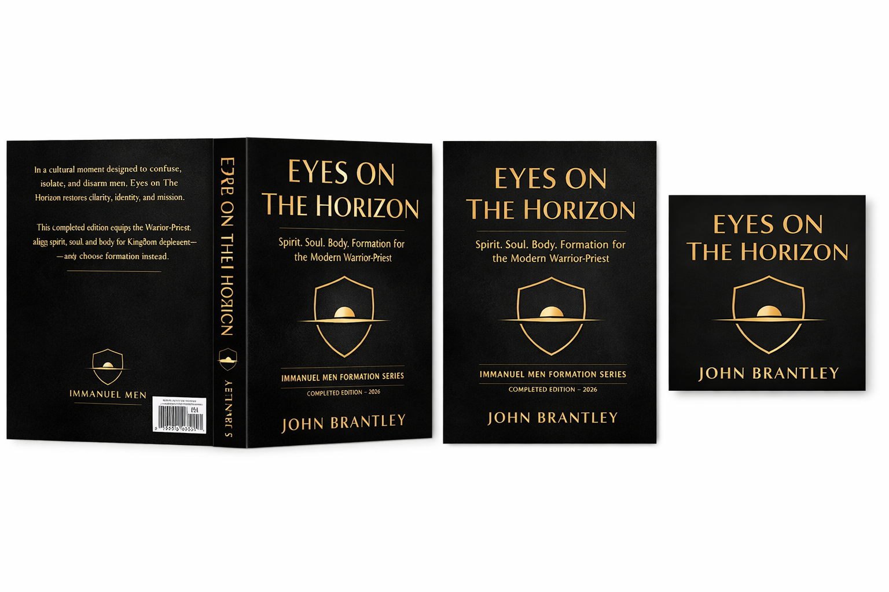

Also by John Brantley
Beyond the Field Manual
Full-length theological works exploring the deep structure of Scripture, typological imagination, and the formation of the whole man — spirit, soul, and body.

Spirit, Soul & Body Series
Eyes on the Horizon
Strategic Spirit and Soul with Tactical Body
The imagination is not a distraction — it is a field of formation. A theological exploration of spirit, soul, and body as the complete arena where the Christian man is shaped, tested, and deployed. Strategic thinking for the man who will not settle for a half-life.

Typology & Scripture
Shadow of Things to Come
Sacred Patterns, Priestly Types, and Prophetic Figures That Reveal the Substance of Christ
The Old Testament is full of Jesus — and the man who cannot see it is reading half a Bible. A deep typological study of the sacred patterns, priestly figures, and prophetic shadows that all point to one Substance. From the Tabernacle to the Transfiguration, the OT is not background — it is preview.